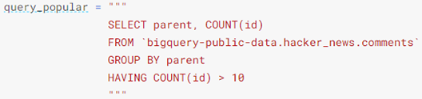
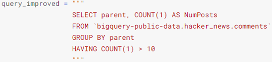
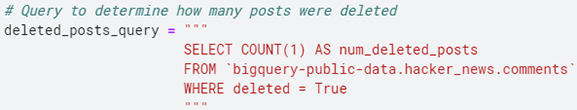
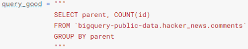
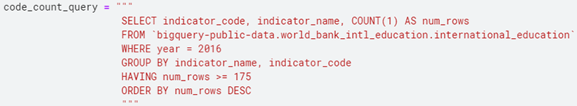
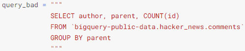
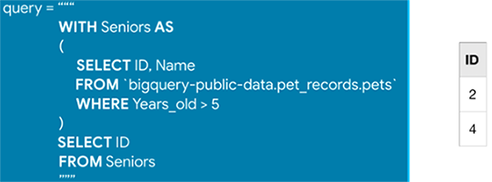
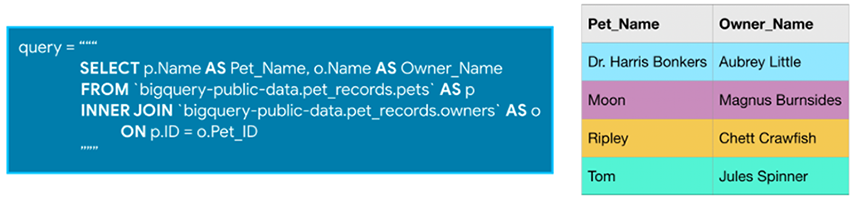
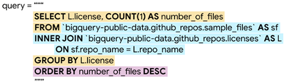
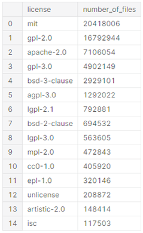

Kaggle
HAVING is used in combination with GROUP BY to ignore groups that don't meet certain criteria.
Which Hacker News comments generated the most discussion? Since the parent column indicates the comment that was replied to, and the id column has the unique ID used to identify each comment, we can GROUP BY the parent column and COUNT() the id column in order to figure out the number of comments that were made as responses to a specific comment. Since we're only interested in popular comments, we'll look at comments with more than ten replies:
If you are ever unsure what to put inside the COUNT() function, you can do COUNT(1) to count the rows in each group. Most people find it especially readable, because we know it's not focusing on other columns:
If you have any GROUP BY clause, then all variables must be passed to either a GROUP BY command, or an aggregation function:
(parent was passed to a GROUP BY command (GROUP BY parent), id was passed to an aggregate function (COUNT(id)))
This query won't work (the author column isn't passed to an aggregate function or a GROUP BY clause):
On its own, AS is a convenient way to clean up the data returned by your query. It's even more powerful when combined with WITH in what's called a "common table expression". A common table expression (or CTE) is a temporary table that you return within your query.
You might want to use the pets table to ask questions about older animals in particular. You can start by creating a CTE which only contains information about animals more than five years old:
You could do this without a CTE, but if this were the first part of a very long query, removing the CTE would make it much harder to follow.
Also, it's important to note that CTEs only exist inside the query where you create them, and you can't reference them in later queries. So, any query that uses a CTE is always broken into two parts: (1) first, we create the CTE, and then (2) we write a query that uses the CTE.
In general, when you're joining tables, it's a good habit to specify which table each of your columns comes from.
INNER JOIN: That means that a row will only be put in the final output table if the value in the columns you're using to combine them shows up in both the tables you're joining (if Tom's ID number of 4 didn't exist in the pets table, we would only get 3 rows back from this query).
It's a big query, and so we'll investigate each piece separately. We'll begin with the JOIN (highlighted in blue above). This specifies the sources of data and how to join them. We use ON to specify that we combine the tables by matching the values in the repo_name columns in the tables. Next, we'll talk about SELECT and GROUP BY (highlighted in yellow). The GROUP BY breaks the data into a different group for each license, before we COUNT the number of rows in the sample_files table that corresponds to each license. Finally, the ORDER BY (highlighted in purple) sorts the results so that licenses with more files appear first. It was a big query, but it gave us a nice table summarizing how many files have been committed under each license:
